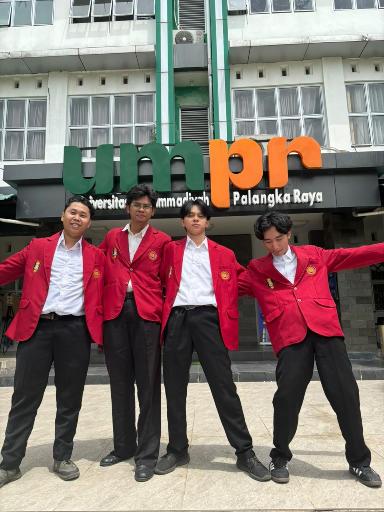
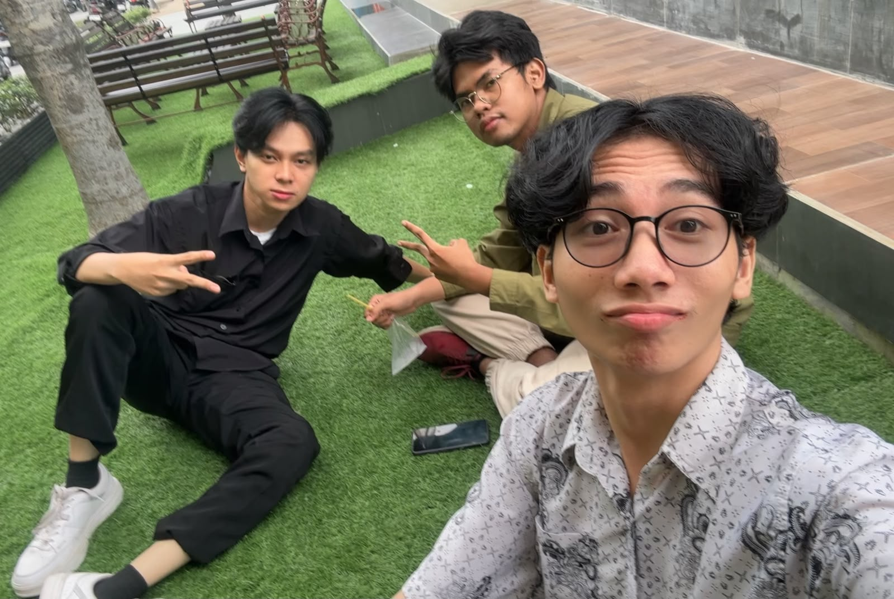
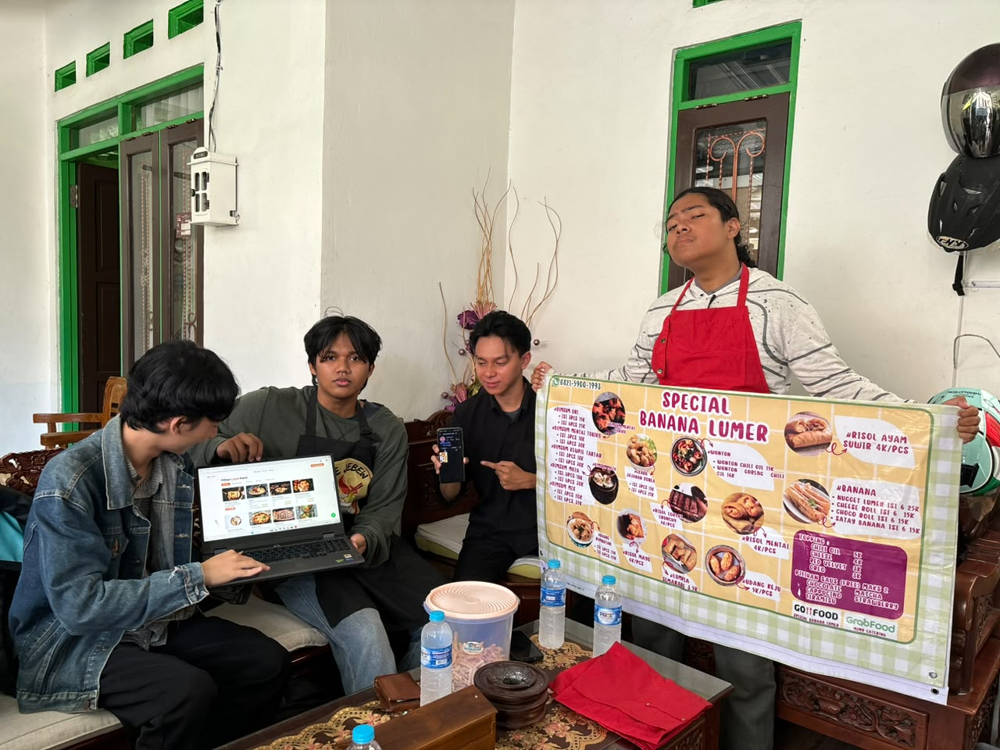
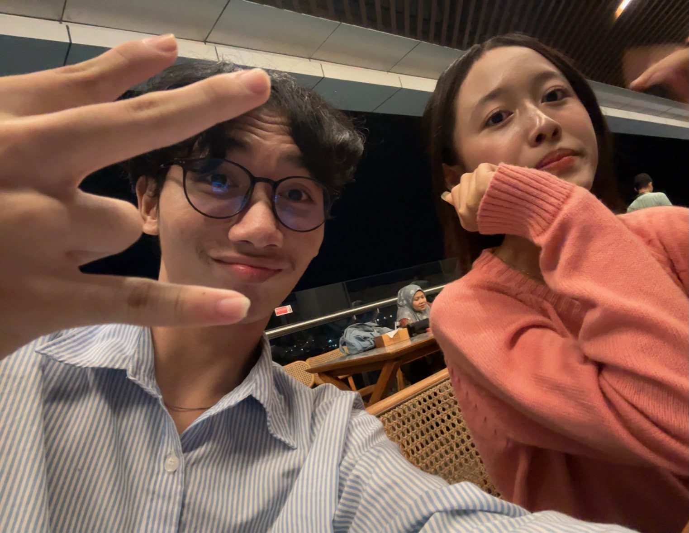
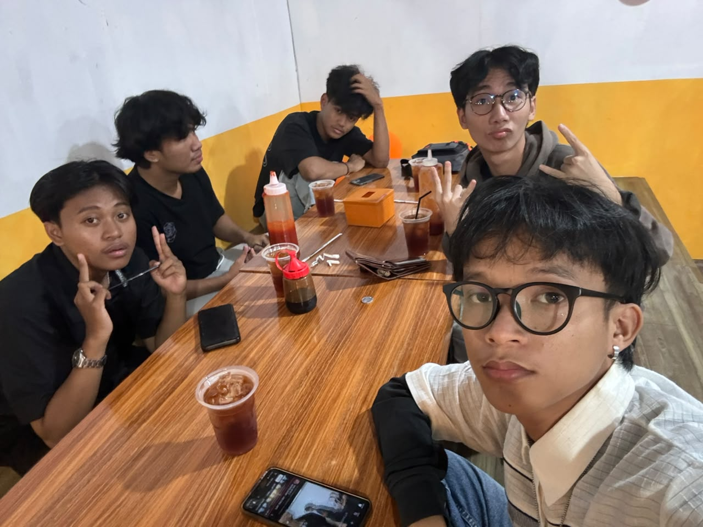
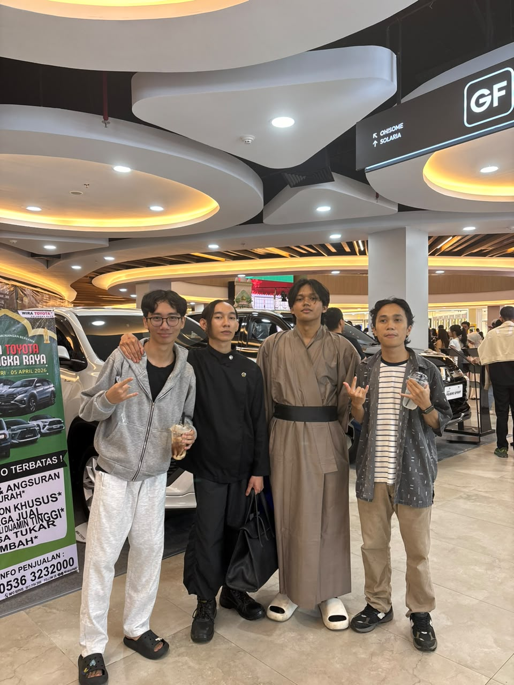
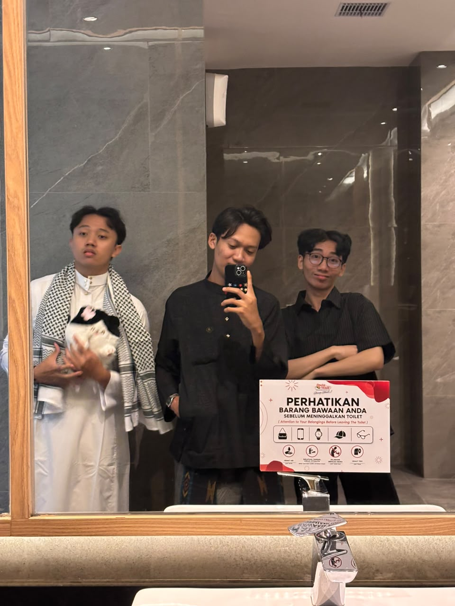
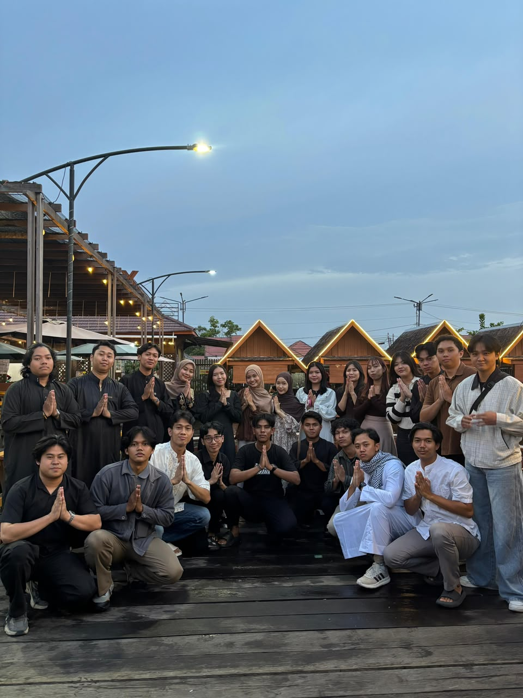
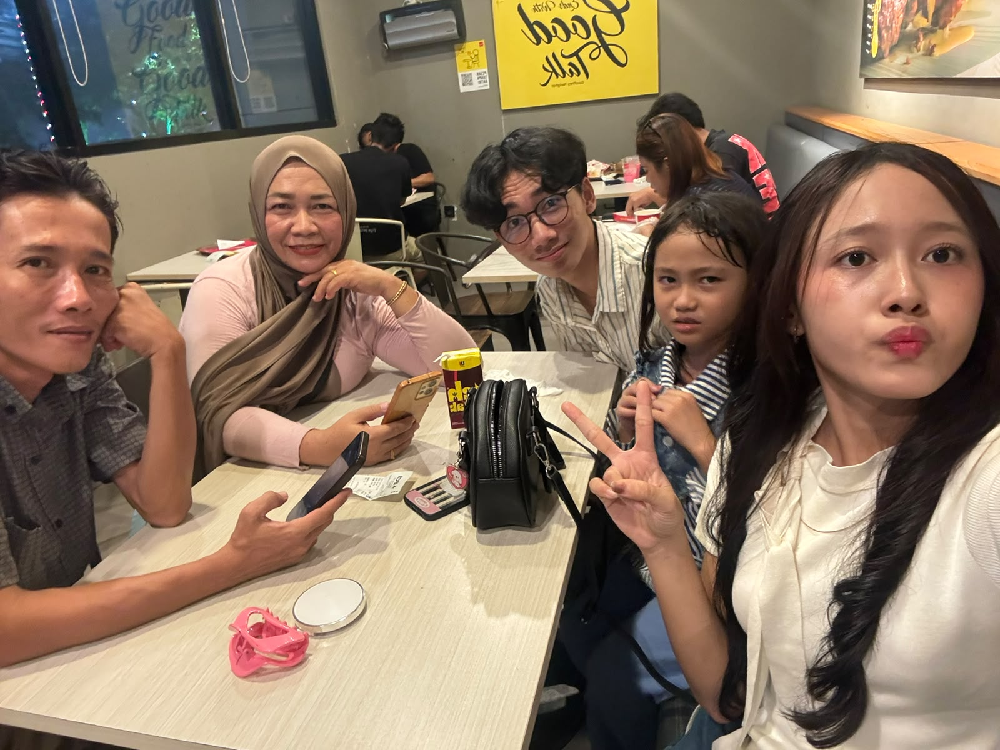

Welcome to My Portfolio
Semuanya berawal dari hobi bereksperimen di komputer mengutak-atik file dan mencoba segala command sampai penasaran bagaimana semua itu bisa bekerja. Rasa penasaran itu membawa saya masuk SMK Jurusan Rekayasa Perangkat Lunak, dimulai belajar level awal dasar pemrograman hingga ke mid level, lalu melanjutkan ke bangku kuliah Ilmu Komputer untuk memperdalam web dan kecerdasan buatan.
Halo, saya Atha Asriandi
Saya adalah junior developer yang berfokus pada pengembangan web dan pembelajaran mesin. Saya senang mengubah ide menjadi sesuatu yang bisa dilihat dan dipakai, mulai dari tampilan yang rapi sampai logika di belakangnya. Saat ini saya terus belajar, mencoba hal baru, dan membangun proyek kecil agar kemampuan saya semakin tajam.
- Nama lengkapAtha Asriandi
- NIM23.53.027631
- UniversitasUniversitas Muhammadiyah Palangkaraya
- Program StudiIlmu Komputer
Skills & Teknologi
Web
AI & Data
Cloud & Tools
Moment-moment saya
Scroll ke bawah untuk menggeser galeri.Geser ke samping untuk melihat semuanya.








